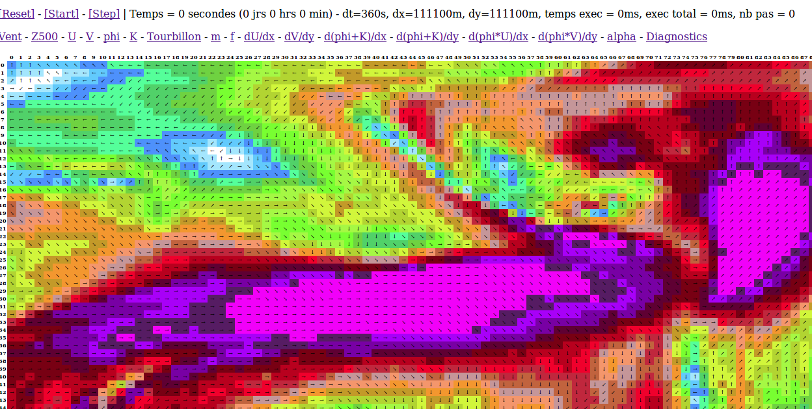

var Atmosphere = function ()
{
// **** CONSTANTES TECHNIQUES ****
// Types de projection cartégienne. m=1 constant
this.PROJ_CARTESIEN = 0;
// Type de projection mercator de diamètre terre. m=cos(lat)
this.PROJ_MERCATOR = 1;
// **** PARAMETRES DU MODELE ****
// Type de projection à utiliser pour les équations (détermine m)
this.projection = this.PROJ_CARTESIEN;
// Pas de grille en degré dans la direction des latitudes.
this.dlat = 10;
// Pas de grille en degré dans la direction des longitudes.
this.dlon = 10;
// Pas de grille en X. 1° = 111.11km. Recalculé à partir de dlon.
this.dx = 1111110;
// Pas de grille en Y. 1° = 111.11km. Recalculé à partir de dlat.
this.dy = 1111110;
// Largeur de grille du domaine
this.width=36;
// Hauteur de grille du domaine
this.height=36;
// Latitude du coin haut gauche du domaine.
this.nlat = 90;
// Latitude du coin bas droite du domaine.
this.slat = -80;
// Latitude du coin haut gauche du domaine
this.wlon = 0;
// Longitude du coin bas droite du domaine
this.elon = 350;
// Pas de temps (attention à la stabilité !)
this.dt = 3600;
// Largeur de la zone de relaxation pour le couplage.
this.relaxation = 2;
// Combien de temps écoulé depuis le début de simulation
this.time = 0;
// **** VARIABLES DE LA SIMULATION ****
// Composantes du vent T
this.U = [];
this.V = [];
// Geopotentiel pression nulle (=gz où p=0).
this.phi = [];
// Initialise le géopotentiel 500hPa
this.setPhi = function(g500) { }
// Initialise la composante U du vent 500hPa
this.setU = function(u500) { }
// Initialise la composante V du vent 500hPa
this.setV = function(v500) { }
// Initialise le modèle avec les variables qui ont été fournies préalablement.
this.init = function() { }
// Démarre le modèle en exécutant le schéma d'Euler.
this.start = function() { }
// Avance le modèle d'un pas en utilisant le schéma explicite centré.
this.step = function() { }
}
Pour utiliser la classe, on doit paramétrer de la manière suivante, ce qui est fait dans la page HTML :
var atmos = new Atmosphere();
...
$(document).ready(function() {
atmos.projection = atmos.PROJ_CARTESIEN;
atmos.width = 144;
atmos.height = 72;
atmos.dt = 360;
atmos.dlat = 1;
atmos.dlon = 1;
atmos.nlat = 80;
atmos.slat = atmos.nlat-atmos.height*atmos.dlon;
atmos.elon = 40;
atmos.wlon = atmos.elon-atmos.width*atmos.dlon;
...
}
La définition du domaine mérite sans doutes quelques précisions :
...
<script>
...
function reset()
{
if (status!="ready") return;
atmos.setPhi(h500[0]);
atmos.setU(u500[0]);
atmos.setV(v500[0]);
atmos.init();
totalTime = 0;
totalStep = 0;
printResult();
}
function start()
{
if (status!="ready") return;
var firstTimestamp = new Date().getTime();
coupler();
atmos.start();
var secondTimestamp = new Date().getTime();
lastExecTime = secondTimestamp - firstTimestamp;
totalStep++;
totalTime+=lastExecTime;
}
function step()
{
if (status!="ready") return;
var firstTimestamp = new Date().getTime();
coupler();
atmos.step();
var secondTimestamp = new Date().getTime();
lastExecTime = secondTimestamp - firstTimestamp;
totalStep++;
totalTime+=lastExecTime;
}
</script>
...
<a href="#" onclick="reset(); return false;">[Reset]</a> -
<a href="#" onclick="start(); printResult(); return false;">[Start]</a> -
<a href="#" onclick="step(); printResult(); return false;">[Step]</a> |
<span id="statistics"></span>
...
#!/bin/sh
for valid in "000" "003" "006" "009" "012" "015" "018" "021" "024"
do
for hgt in "500"
do
wgrib2 gfs.t00z.pgrb2.0p50.f$valid -s | grep HGT:$hgt | wgrib2 -i gfs.t00z.pgrb2.0p50.f$valid -text hgt_$hgt"_"$valid.txt
wgrib2 gfs.t00z.pgrb2.0p50.f$valid -s | grep UGRD:$hgt | wgrib2 -i gfs.t00z.pgrb2.0p50.f$valid -text ugrd_$hgt"_"$valid.txt
wgrib2 gfs.t00z.pgrb2.0p50.f$valid -s | grep VGRD:$hgt | wgrib2 -i gfs.t00z.pgrb2.0p50.f$valid -text vgrd_$hgt"_"$valid.txt
done
done
Les fichiers texte sont ensuite chargés en mémoire via la méthode AJAX au chargement de la page, après constitution d'une liste des champs requis. Les tableaux h500, u500 et v500 contiendront une entrées pour les données de chaque échéance.
var h500 = [];
var u500 = [];
var v500 = [];
var valids = ["000", "003", "006", "012", "015", "018", "021", "024"];
var reslist = [];
var status = "loading";
$(document).ready(function() {
....
for (i=0;i<valids.length;i++) {
reslist.push("hgt_500_"+valids[i]+".txt");
reslist.push("ugrd_500_"+valids[i]+".txt");
reslist.push("vgrd_500_"+valids[i]+".txt");
}
printLoadingStatus();
$.ajax({ url : "res/run/"+scenario+"/"+reslist[0],
dataType: "text",
success : onFieldDownload });
});
function onFieldDownload(data) {
var f = reslist[0].substring(0,1);
switch (f) {
case "h": h500[h500.length]=[];
loadField(h500[h500.length-1], data);
break;
case "u": u500[u500.length]=[];
loadField(u500[u500.length-1], data);
break;
case "v": v500[v500.length]=[];
loadField(v500[v500.length-1], data);
break;
}
reslist.shift();
if (reslist.length>0)
{
printLoadingStatus();
$.ajax({
url : "res/run/"+scenario+"/"+reslist[0],
dataType: "text",
success : onFieldDownload
});
}
else
{
$(statistics).html("Prêt");
status = "ready";
reset();
}
}
function printLoadingStatus()
{
$(statistics).html("Chargement "+reslist[0]);
}
La fonction loadField() est un peu particulière, et son code est un peu compliqué. En effet, GFS est un modèle global, qui contient plus de données que le domaine que l'on veut utiliser, qui plus est en résolution supérieure. On doit donc prendre une donnée sur deux pour atteindre la résolution de 1°. Pour ne rien simplifier, notre domaine est à cheval sur le méridien de Greenwich, qui correspond aux limites horizontales de la grille de GFS : pour constituer notre grille, on doit aller piocher les données à l'est et à l'ouest du méridien, qui sont à deux endroits différents. Et dernier point, mais là c'est la faute à mes choix techniques, j'ai voulu travailler avec une grille orientée dans le sens d'affichage "informatique", cad avec les points les plus au nord en haut. Ce qui oblige encore à un parcours inversé dans la grille de GFS. Voici le code et ses calculs d'indices affreux :
function loadField(f, data)
{
var lines = data.split('\n');
var width = 720;
var height = 361;
lines.shift();
// Ce qui est à droite de greenwich
var greenwich = Math.floor(-atmos.wlon/atmos.dlon);
var ystep = 2*atmos.dlat;
var ystart = Math.floor((90-atmos.nlat)*2);
var yend = Math.floor((90-atmos.slat)*2);
var xstep = 2*atmos.dlon;
var xstart = 0;
var xend = 2*atmos.elon;
var i = greenwich;
for (var y = ystart ; y<yend ; y+=xstep)
{
for (var x = xstart ; x<xend ; x+=xstep)
{
f[i] = Number(lines[x+(360-y)*width]);
i++;
}
i += greenwich;
}
// Ce qui est à gauche de greenwich
var xstart = width-Math.floor((-atmos.wlon*2));
var xend = 720;
i = 0;
for (var y = ystart ; y<yend ; y+=ystep)
{
for (var x = xstart ; x<xend ; x+=xstep)
{
f[i] = Number(lines[x+(360-y)*width]);
i++;
}
i += atmos.width-greenwich;
}
}
this.product = function(x, y, res)
{
for(var i=0;i<this.width*this.height;i++)
{
res[i] = x[i]*y[i];
}
}
this.sum = function(x, y, res)
{
for(var i=0;i<this.width*this.height;i++)
{
res[i] = x[i]+y[i];
}
}
Le coeur du modèle repose ensuite sur les calculs de dérivée. Nous aurons besoin de pouvoir calculer des dérivées spatiales selon l'axe x et selon l'axe y. Il s'agit tout simplement des formules que nous avions données dans la partie théorique. Remarquez que ces dérivées ne peuvent être calculées aux frontières du domaine, car sinon les indices seraient en dehors du tableau. Cela signifie que nous ne pourrons pas calculer d'évolution du modèle pour les indices de tableau situés aux limites. Cela posera évidemment des problèmes à mesure que l'on avancera dans la simulation, mais nous verrons comment fixer cela. Voici le code de calcul des dérivées spaciales :
this.d_dx = function(f, res)
{
for (var y=1;y<this.height-1;y++)
{
for(var x=1;x<this.width-1;x++)
{
var i = x+y*this.width;
res[i] = (f[i+1]-f[i-1])/(2*this.dx*this.m[i]);
}
}
}
this.d_dy = function(f, res)
{
for (var y=1;y<this.height-1;y++)
{
for(var x=1;x<this.width-1;x++)
{
var i = x+y*this.width;
res[i] = (f[i-this.width]-f[i+this.width])/(2*this.dy);
}
}
}
this.init = function()
{
var lat = this.nlat*(Math.PI/180);
this.dx = 111.1 * this.dlon * 1000;
this.dy = 111.1 * this.dlat * 1000;
this.time = 0;
for (var y=0;y<this.height;y++)
{
for(var x=0;x<this.width;x++)
{
var i = x+y*this.width;
var h = 0;
// Paramètre de coriolis et facteur d'échelle en fonction de la latitude
this.f[i] = 2 * this.omega * Math.sin(lat);
switch (this.projection)
{
case this.PROJ_CARTESIEN:
this.m[i] = 1;
break;
case this.PROJ_MERCATOR:
this.m[i] = Math.cos(lat);
break;
default:
//supposé fourni par l'appelant
//this.m[i] = 1;
}
// Initialisation du couplage
if (y==0 || y==this.height-1 || x==0 || x==this.width-1)
{
this.alpha[i] = 1.0;
}
else if (y<1+this.relaxation||y>=this.height-this.relaxation-1
||x<1+this.relaxation||x>=this.width-this.relaxation-1)
{
var xd = 0;
var yd = 0;
if (x<1+this.relaxation) xd = this.relaxation-x+1;
else if (x>=this.width-this.relaxation-1)
xd = x-this.width+this.relaxation+2;
if (y<1+this.relaxation) yd = this.relaxation-y+1;
else if (y>=this.height-this.relaxation-1)
yd = y-this.height+this.relaxation+2;
if (xd<yd) xd = yd;
//else if (xd<yd) xd = yd;
this.alpha[i] = (xd/(this.relaxation+1));
}
else
{
this.alpha[i] = 0.0;
}
// Creation des tableaux
this.K[i] = 0;
this.tourbillon[i] = 0;
this.U_t[i] = this.U[i];
this.V_t[i] = this.V[i];
this.phi_t[i] = this.phi[i];
this.dU_dx[i] = 0;
this.dV_dy[i] = 0;
this.phi_U[i] = 0;
this.phi_V[i] = 0;
this.phi_K[i] = 0;
this.dx_phi_K[i] = 0;
this.dy_phi_K[i] = 0;
this.dx_phi_U[i] = 0;
this.dy_phi_V[i] = 0;
}
lat -= this.dlat*(Math.PI/180);
}
this.calcEnergy();
this.calcTourbillon();
this.calcDiagnostics();
}
this.calcEnergy = function()
{
for(var i=0;i<this.width*this.height;i++)
{
this.K[i] = this.m[i]*this.m[i]*(this.U[i]*this.U[i]+this.V[i]*this.V[i])/2;
}
}
this.calcTourbillon = function()
{
this.d_dy(this.U, this.dU_dy);
this.d_dx(this.V, this.dV_dx);
for(var i=0;i<this.width*this.height;i++)
{
this.tourbillon[i] = this.m[i]*this.m[i]*(this.dV_dx[i]-this.dU_dy[i]);
}
}
this.start = function()
{
// Formules intermédiaires et dérivées
this.product(this.U, this.phi, this.phi_U);
this.d_dx(this.phi_U, this.dx_phi_U);
this.product(this.V, this.phi, this.phi_V);
this.d_dy(this.phi_V, this.dy_phi_V);
this.sum(this.K, this.phi, this.phi_K);
this.d_dx(this.phi_K, this.dx_phi_K);
this.d_dy(this.phi_K, this.dy_phi_K);
// Schema d'Euler pour le premier pas de temps
for (var y=1;y<this.height-1;y++)
{
for(var x=1;x<this.width-1;x++)
{
var i = x+y*this.width;
var A = (this.tourbillon[i] + this.f[i])*this.V[i]-this.dx_phi_K[i];
var B = -(this.tourbillon[i] + this.f[i])*this.U[i]-this.dy_phi_K[i];
var C = -this.m[i]*this.m[i]*(this.dx_phi_U[i]+this.dy_phi_V[i]);
this.U_t[i] = this.U[i] + this.dt*A;
this.V_t[i] = this.V[i] + this.dt*B;
this.phi_t[i] = this.phi[i] + this.dt*C;
}
}
...
var tmp = this.U_t; this.U_t = this.U; this.U = tmp;
tmp = this.V_t; this.V_t = this.V; this.V = tmp;
tmp = this.phi_t; this.phi_t = this.phi; this.phi = tmp;
this.calcEnergy();
this.calcTourbillon();
this.calcDiagnostics();
this.time += this.dt;
}
this.step = function()
{
// Formules intermédiaires et dérivées
...
// Schema différences centrales
for (var y=1;y<this.height-1;y++)
{
for(var x=1;x<this.width-1;x++)
{
var i = x+y*this.width;
var A = (this.tourbillon[i] + this.f[i])*this.V[i]-this.dx_phi_K[i];
var B = -(this.tourbillon[i] + this.f[i])*this.U[i]-this.dy_phi_K[i];
var C = -this.m[i]*this.m[i]*(this.dx_phi_U[i]+this.dy_phi_V[i]);
this.U_t[i] = this.U_t[i] + 2*this.dt*A;
this.V_t[i] = this.V_t[i] + 2*this.dt*B;
this.phi_t[i] = this.phi_t[i] + 2*this.dt*C;
}
}
...
}